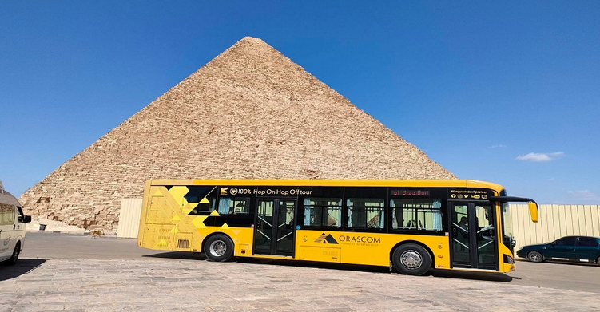

Ancient Grandeur Reimagined: The Silent Transformation of the Pyramids
A profound reimagining of how a 4,500-year-old necropolis interacts with the 21st-century traveler, harmonising modern infrastructure with historical soul.

CAIRO — To stand at the foot of the Great Pyramid of Giza in early 2026 is to experience a sensation that was, until recently, almost unthinkable: stillness. For decades, the majesty of the last remaining wonder of the ancient world was often overshadowed by a cacophony of diesel engines, persistent touts, and the logistical friction of a site struggling under the weight of its own fame. Today, however, the air is clearer, the crowds are managed, and the atmosphere is one of curated reverence.
Sovereignty Meets Private Efficiency
At the heart of this revival lies a nuanced administrative shift. The Egyptian state has retained absolute sovereignty over the land and its treasures, yet it has intelligently outsourced the "experience" to specialized private management. This separation of "sovereignty" from "service" is the project’s masterstroke.
"By allowing a private operator to handle the mechanics of hospitality, the state remains the ultimate guardian of history while ensuring the visitor experience is handled with corporate precision."
The Invisible Foundation
Much of what makes the "new" Giza function remains unseen. Beneath the desert sands, a massive subterranean overhaul has taken place, invisible to the cameras but vital for the site's survival. Millions have been invested in fiber-optic networks, advanced fire-suppression systems, and robust utility grids.
From Chaos to Choreography
The entry sequence has been entirely redefined. The new Visitor Centre, positioned at the Fayoum Road gateway, acts as a psychological "buffer zone." Its understated architecture utilizes local materials to blend into the landscape, preparing the visitor—briefing them on the historical weight of the monuments—before they are transported into the site via a silent fleet of electric buses.
This shift to green transport is more than a nod to sustainability; it is a conservation necessity. By removing internal combustion engines, the project has drastically reduced both acoustic and chemical pollution, returning a sense of dignity to the Khufu and Khafre monuments.
The Human Element: Horses and Heritage
Perhaps the most delicate challenge was the social one. Rather than choosing exclusion, the current model opts for integration. By establishing dedicated zones, transparent pricing, and digital tracking systems, these traditional services have been brought into the formal fold, preserving a traditional way of life without compromising peace of mind.
A Global Benchmark
As the sun sets over the plateau, casting long shadows across the Sphinx, the debate over "commercialisation" versus "prestige" seems to have found its answer. Modern travelers do not view clean facilities and organized dining as luxuries; they view them as essential respect for the site itself.
The pyramids remain symbols of eternity, but they are finally being managed by a mindset that understands that protecting the past begins with respecting the guest.